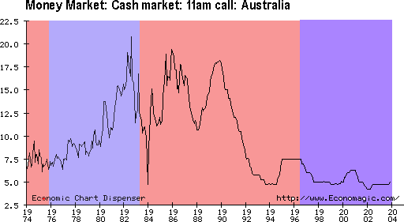

How to Win an Australian Election
Dr Jim Cairns the Deputy PM said in 1975 "I think it's now not possible for a government to be elected, or to remain in office, if opposed by the media complex".
We have a situation in Australia where the media and the government are ideologically as one.
Packer came out before the election and recommended a vote for the Liberal party, Murdoch as we all know is staunchly right wing. The biggest television network owner which proudly advertises "More people get their news from Channel 9 than anywhere else", the biggest newspaper owner, who actually owns both of the major papers in the crucial Queensland electorate and the only national newspaper, between them the biggest cable tv operators in Australia, and they both openly supporting Howard. Not quite Silvio Berlusconi in Italy, but close.
Take Howards oft repeated "interest rates always go up under Labor". Do a web search, you will find any number of places where he said it. Factually completely false, in fact you don't need to look any further than the last Labor government. Interest rates went DOWN under the LAST Labor government.
Here are the interest rates for the last 30 years, with Labor in red and the Liberals in blue. You will probably be shocked by what you see, but then they say that ultimate power is the ability to define common sense...

They just won an election on this lie.
Anyway it would take a book the size of War and Peace to go into all of this governments lies, lets take that as a given.
A functioning media would have been calling for Howards resignation, but not our media, they just report what he says. 90% of newspaper editorials in this election and the last called for a vote for the Howard Liberal government, the most dishonest Prime Minister, the most manipulative government, in living memory.
One hardly needs to look any further for a reason for this than that under the Liberals the Australian government has become the largest advertiser in the country. Bigger than McDonalds, bigger than Coca Cola. Our government is directly handing over millions to media corporations, predominantly those of Packer and Murdoch, in order to brainwash us with one policy or another using our own money. Trying to scare us about terrorism that we have less chance of dying from than a bee sting, trying to tell us what wonderful things they are doing about the environment so we can all just go to sleep and not worry about it etc... They hire a US multinational called Universal McCann to organise all this for them, organising a media on the take from our government. Buying their loyalty, buying our passivity.
Packer and Murdoch are especially fond of Howard because he, perhaps as a reward for their helping whip up the population to support the Iraq war, is going to reform the cross media ownership laws. Now that the Howard government has control of the Senate, these laws can finally come through, making even less barriers to the big players buying up anything they can get there hands on. Simple enough deal, you help us stay in government, we'll let you write some laws about media ownership. Once these are through it will be even easier for Howard to lie through his teeth, and have the media report it without comment.
Add to this the filters of the media that Chomsky talks about, that they are owned by big business, that the influence of big business opinions filter down through the chain of command, that business advertising is their main revenue stream, that regurgitating PR is so much easier and cheaper than investigative reporting etc etc. The media and the state has replaced the church and state as the unholy alliance of powers with which the people are lead. Someone once said that the wars of the future will be fought with information, look at the recent attack on Iraq, the battle was not whether they would beat an impoverished country brutalised for years under our feudal sanction system, it was whether Howard, Bush and Blair and their ideological brethren in the media could convince the people to let them do it.
To digress for a moment, look into the sanctions on Iraq, 500,000 children dead from easily treatable diseases in a country where obesity was once a major childhood health problem, and Australian warships and political support helping make it possible whilst the media kept every one passive. Perhaps the greatest crimes against humanity we have ever been involved in and absolutely no debate about it in this country, that is a level of control that Stalin would have been proud of. Even if you thought the cause was just, even if you thought that we had no option, 500,000 children, perhaps a million dead overall, removed from our cultural conscience with barely a whisper.
I don't see how we can have a functioning democracy with a corrupt media. If peoples information sources are controlled by certain interests, so too are their beliefs. If you asked the average person they will tell you they are critical in their thinking and don't believe everything they read, but reading is passe in our media, these days ads are made by people with degrees in psychology and marketing, they aren't interested in your conscious mind, it's getting into your subconscious mind that they can really use to control you. As someone once said, the triumph of modern advertising techniques is that even if you see through them they still work on you.
I think the answer lies in circumventing the traditional media, as a member of Greenpeace we did a campaign before the election writing letters about climate change to the national newspapers, we even got a few in but, perhaps in total during the whole campaign we got about as much space in the nations media after writing hundreds of letters as the one daily headline.
So what are we left with, the Internet, becoming members of local groups of like minded people, protesting, reaching out to our friends, families, work colleagues, making our own independent media, supporting independent media, and any other ways our creative minds can come up with of reaching out to our fellow citizens.
We all need to put into action the realisation that our duty as citizens in a democracy extends beyond our vote. Through history there have always been sections of the community who will seek illegitimate power, and it is only by making stronger connections as people that we can resist them. As Chomsky says they all want us to be isolated atoms of consumption, so lets be the exact opposite. We are fighting against the biggest corporations the world has ever seen, but they are just comprised of individual people like you and I. Starting with our own, one mind at a time we can claim our society.